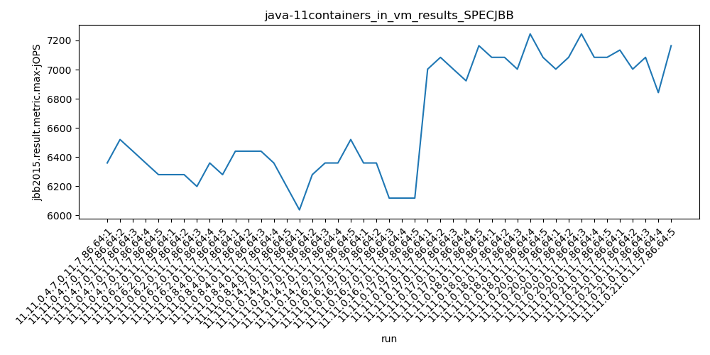
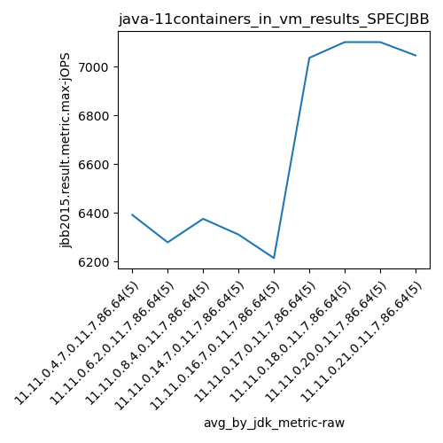
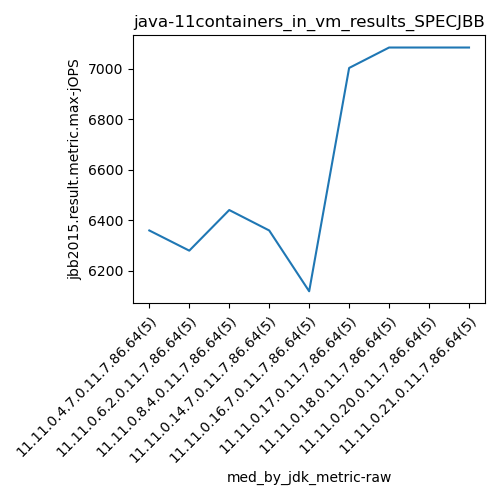
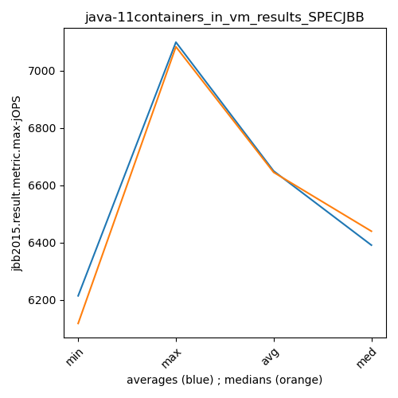
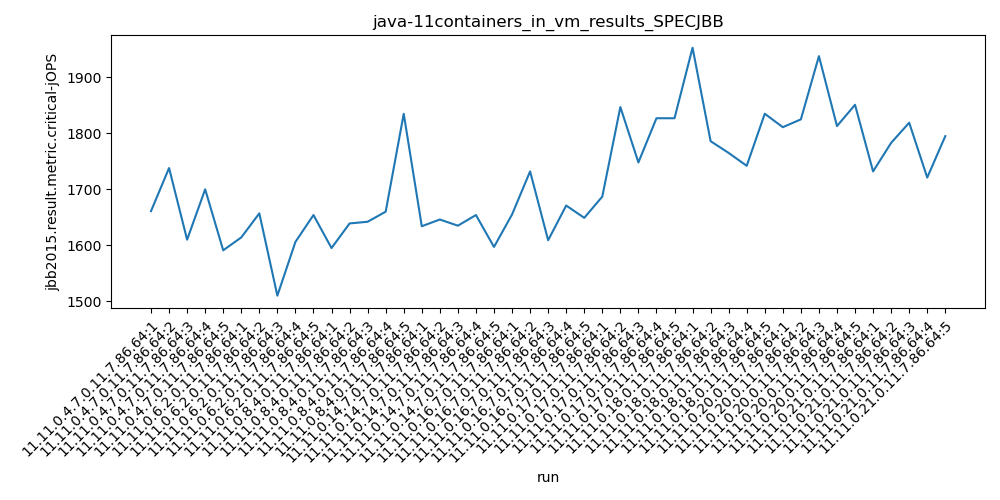
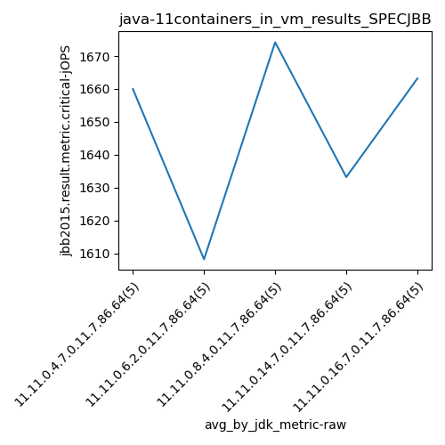
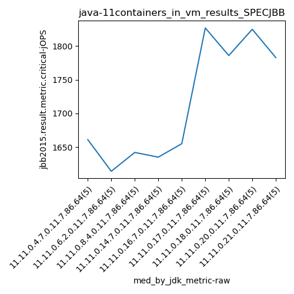
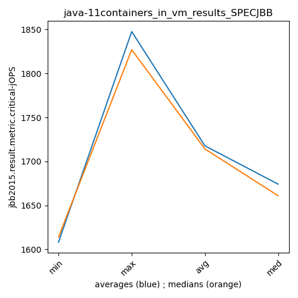

java-11 SPECJBB
Context at bottom
/home/jvanek/git/benchmarks-in-nested-virtualisation-toolchain/final_results/containers_in_vm_results/containers_in_vm_results_J2DBENCH
java-11
SPECJBB
/home/jvanek/git/benchmarks-in-nested-virtualisation-toolchain/final_results/containers_in_vm_results/containers_in_vm_results_RADARGUNs3
java-11
SPECJBB
/home/jvanek/git/benchmarks-in-nested-virtualisation-toolchain/final_results/containers_in_vm_results/containers_in_vm_results_DACAPO
java-11
SPECJBB
/home/jvanek/git/benchmarks-in-nested-virtualisation-toolchain/final_results/containers_in_vm_results/containers_in_vm_results_RADARGUNs1
java-11
SPECJBB
/home/jvanek/git/benchmarks-in-nested-virtualisation-toolchain/final_results/containers_in_vm_results/containers_in_vm_results_SPECJBB
java-11
SPECJBB
containers_in_vm_results_SPECJBB
- containers_in_vm_results_SPECJBB - max-jops
- containers_in_vm_results_SPECJBB - critical jops
containers_in_vm_results_SPECJBB - max-jops
Expected number of java-11 JDKs: 7
1st avgmed_alljdks_metric:
/home/jvanek/git/benchmarks-in-nested-virtualisation-toolchain/final_results/result_processing.py /home/jvanek/git/benchmarks-in-nested-virtualisation-toolchain/final_results/containers_in_vm_results/containers_in_vm_results_SPECJBB jbb2015.result.metric.max-jOPS False
values: [6359, 6520, 6440, 6359, 6279, 6279, 6279, 6198, 6359, 6279, 6440, 6440, 6440, 6359, 6198, 6037, 6279, 6359, 6359, 6520, 6359, 6359, 6118, 6118, 6118]

Expected number of iterations: 5
final number of values: 25 out of 35
Pass rate: 71.4%
values: (6037, 6520, 6314.16, 6359)

** accuracy from all jdks and runs
more is better
MIN: 6037
MAX: 6520
AVG: 6314.16
MED: 6359
Relative differences 1:
MIN-MAX: 7.0 %
MIN-AVG: 4.0 %
MIN-MED: 5.0 %
MAX-MIN: -8.0 %
MAX-AVG: -3.0 %
MAX-MED: -3.0 %
AVG-MED: 1.0 %
stored to java-11.properties. sort | uniq that!
2nd avgmed_by_jdk_metric:
values: [6391.4, 6278.8, 6375.4, 6310.8, 6214.4]

values: [6359, 6279, 6440, 6359, 6118]

values: (6214.4, 6391.4, 6314.16, 6310.8)
values: (6118, 6440, 6311.0, 6359)

** accuracy from all jdks where runs were avged
more is better
MIN: 6214.4
MAX: 6391.4
AVG: 6314.16
MED: 6310.8
Relative differences 1:
MIN-MAX: 3.0 %
MIN-AVG: 2.0 %
MIN-MED: 2.0 %
MAX-MIN: -3.0 %
MAX-AVG: -1.0 %
MAX-MED: -1.0 %
AVG-MED: -0.0 %
stored to java-11.properties. sort | uniq that!
** accuracy from all jdks where runs were medianed
more is better
MIN: 6118
MAX: 6440
AVG: 6311.0
MED: 6359
Relative differences 1:
MIN-MAX: 5.0 %
MIN-AVG: 3.0 %
MIN-MED: 4.0 %
MAX-MIN: -5.0 %
MAX-AVG: -2.0 %
MAX-MED: -1.0 %
AVG-MED: 1.0 %
stored to java-11.properties. sort | uniq that!
containers_in_vm_results_SPECJBB - critical jops
Expected number of java-11 JDKs: 7
1st avgmed_alljdks_metric:
/home/jvanek/git/benchmarks-in-nested-virtualisation-toolchain/final_results/result_processing.py /home/jvanek/git/benchmarks-in-nested-virtualisation-toolchain/final_results/containers_in_vm_results/containers_in_vm_results_SPECJBB jbb2015.result.metric.critical-jOPS False
values: [1661, 1738, 1610, 1700, 1591, 1614, 1657, 1510, 1606, 1654, 1595, 1639, 1642, 1660, 1835, 1634, 1646, 1635, 1654, 1597, 1655, 1732, 1609, 1671, 1649]

Expected number of iterations: 5
final number of values: 25 out of 35
Pass rate: 71.4%
values: (1510, 1835, 1647.76, 1646)

** accuracy from all jdks and runs
more is better
MIN: 1510
MAX: 1835
AVG: 1647.76
MED: 1646
Relative differences 1:
MIN-MAX: 18.0 %
MIN-AVG: 8.0 %
MIN-MED: 8.0 %
MAX-MIN: -22.0 %
MAX-AVG: -11.0 %
MAX-MED: -11.0 %
AVG-MED: -0.0 %
stored to java-11.properties. sort | uniq that!
2nd avgmed_by_jdk_metric:
values: [1660.0, 1608.2, 1674.2, 1633.2, 1663.2]

values: [1661, 1614, 1642, 1635, 1655]

values: (1608.2, 1674.2, 1647.7599999999998, 1660.0)
values: (1614, 1661, 1641.4, 1642)

** accuracy from all jdks where runs were avged
more is better
MIN: 1608.2
MAX: 1674.2
AVG: 1647.7599999999998
MED: 1660.0
Relative differences 1:
MIN-MAX: 4.0 %
MIN-AVG: 2.0 %
MIN-MED: 3.0 %
MAX-MIN: -4.0 %
MAX-AVG: -2.0 %
MAX-MED: -1.0 %
AVG-MED: 1.0 %
stored to java-11.properties. sort | uniq that!
** accuracy from all jdks where runs were medianed
more is better
MIN: 1614
MAX: 1661
AVG: 1641.4
MED: 1642
Relative differences 1:
MIN-MAX: 3.0 %
MIN-AVG: 2.0 %
MIN-MED: 2.0 %
MAX-MIN: -3.0 %
MAX-AVG: -1.0 %
MAX-MED: -1.0 %
AVG-MED: 0.0 %
stored to java-11.properties. sort | uniq that!
/home/jvanek/git/benchmarks-in-nested-virtualisation-toolchain/final_results/containers_in_vm_results/containers_in_vm_results_JMH
java-11
SPECJBB
pass rates:
containers_in_vm_results_SPECJBB=71.4%
Context:
- containers_in_vm_results
- SPECJBB